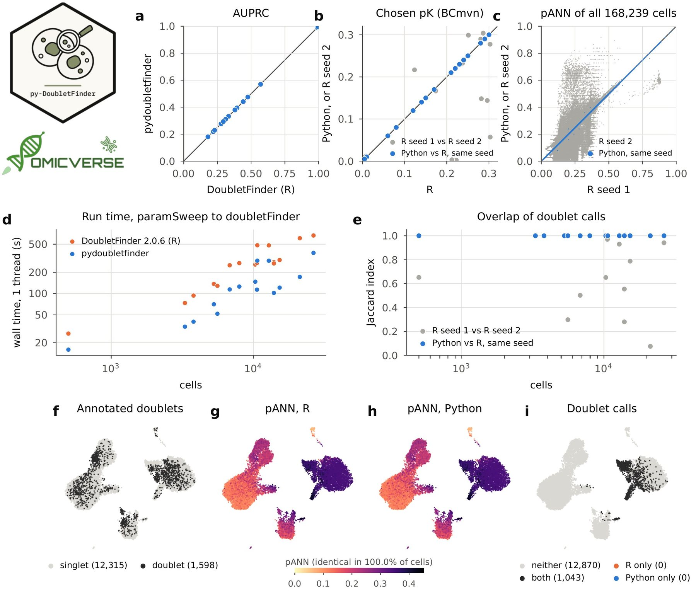

pydoubletfinder: a Python implementation of DoubletFinder for doublet detection in single-cell RNA-seq data
Affiliations
- 1 Department of Genetics, Stanford University, Stanford, CA 94305, USA
- 2 OmicVerse, Inc., San Francisco, CA 94114, USA
- 3 Hubei Key Laboratory of Agricultural Bioinformatics, College of Informatics, Huazhong Agricultural University, Wuhan 430070, China
OmicVerse Technical Reports (2026)Cite this article
Download PDFAbstract
We present pydoubletfinder, a Python implementation of DoubletFinder for doublet detection in single-cell RNA-seq data, covering artificial-doublet generation, the proportion of artificial nearest neighbours (pANN), the pN–pK parameter sweep with the bimodality-coefficient criterion for choosing pK, homotypic-doublet modelling and doublet classification. pydoubletfinder follows DoubletFinder's code paths step by step, including Seurat's preprocessing of every merged real and artificial matrix and R's random number generator, so that the same seed draws the same artificial doublets as in R. On the 16 real datasets of an independent doublet-detection benchmark (168,239 cells, 3–37% doublets annotated experimentally), pydoubletfinder chose the same pK as DoubletFinder 2.0.6 in all 32 runs, returned identical pANN values for 99.99% of cells and identical doublet calls in every dataset, and ran 1.7–3.5 times faster on one thread. pydoubletfinder is used by OmicVerse quality control and is released under CC0 at https://github.com/omicverse/py-DoubletFinder and on PyPI.
- DoubletFinder
- doublet detection
- single-cell RNA-seq
- quality control
- Seurat
- Python
- reproducibility
Introduction
Droplet-based single-cell RNA sequencing captures two or more cells in the same droplet at a rate that grows with the number of cells loaded, and these doublets are a routine quality-control concern1. Doublets of different cell types look like intermediate or novel cell states and can distort clustering, trajectories and differential expression, so computational doublet detection is a standard step of single-cell analysis1. DoubletFinder2 generates artificial doublets by averaging the transcriptomes of random pairs of cells, embeds them together with the real cells, and scores every real cell by the proportion of artificial doublets among its nearest neighbours. In an independent benchmark of computational doublet-detection methods on real data with experimentally annotated doublets, DoubletFinder had the best detection accuracy3.
Single-cell analysis is increasingly done in Python. Workflows are built on scanpy and the scverse ecosystem4,5, and OmicVerse6 brings bulk, single-cell and spatial analyses together in one Python framework. Python offers doublet detectors of its own, such as Scrublet7, but DoubletFinder is available only in R, where it runs on Seurat objects.
Python users currently reach DoubletFinder through rpy28. This requires a parallel R installation with Seurat, converts the count matrix between the two languages and exposes DoubletFinder's options only through the binding layer. A native implementation removes all three costs, as PyDESeq29 has shown for DESeq210 and pyedger11 for edgeR12. We set the same target for pydoubletfinder: a doublet analysis in Python should return the same doublets as the same analysis in R.
Here we present pydoubletfinder, a Python implementation of DoubletFinder that is versioned against a specific DoubletFinder release. We describe its implementation and compare it with DoubletFinder 2.0.6 on the 16 real datasets of the Xi and Li benchmark3.
Implementation
Method
DoubletFinder adds artificial doublets to the real cells, each the average of the counts of two randomly drawn cells, in a proportion pN of the merged data. The merged matrix is processed as in Seurat13: library-size normalisation and log transformation, selection of 2,000 variable genes by the variance-stabilising criterion14, scaling and principal component analysis. For every real cell, DoubletFinder then computes pANN, the proportion of artificial doublets among its nearest neighbours in the first principal components, with the neighbourhood size given as a proportion pK of the merged data. The cells with the highest pANN are called doublets, as many as the expected number of doublets, which can be reduced by the estimated proportion of homotypic doublets from cluster frequencies2. pK is chosen by a parameter sweep over pN and pK: for every pair, the bimodality coefficient15 of the pANN distribution is computed, and the pK with the largest mean-variance-normalised bimodality coefficient (BCmvn) across pN is selected2.
Features and code structure
pydoubletfinder 0.2.1 implements the workflow of DoubletFinder 2.0.6 (Table 1): paramSweep, summarizeSweep, find.pK, doubletFinder with optional cluster annotations and the reuse of a previous pANN, and modelHomotypic. The DoubletFinder class runs these steps on an AnnData object16 and writes the pANN values and the classifications to its cell table under DoubletFinder's column names; every step is also available as a function under a Python name (param_sweep, find_pK). The Seurat steps that DoubletFinder calls are ported in a separate module, and the R random number generator in another, so both can be used and tested on their own. pydoubletfinder builds on NumPy17, SciPy18 and pandas19, runs on one thread by default, and finds neighbours from blocked distance products instead of a full cell-by-cell distance matrix.
| DoubletFinder 2.0.6 / Seurat 5.5.1 | pydoubletfinder | Agreement on the benchmark data |
|---|---|---|
| set.seed, sample | rrng.RRandom | same random draws |
| FindVariableFeatures (loess) | seurat.r_loess | fitted values, absolute difference below $10^{-12}$ |
| FindVariableFeatures (vst) | seurat.vst | same genes, up to ties |
| paramSweep, summarizeSweep, find.pK | param_sweep, summarize_sweep, find_pK | same pK in 32 of 32 runs |
| doubletFinder (pANN) | DoubletFinder.run, doublet_finder | identical for 99.99% of cells |
| doubletFinder (calls) | DoubletFinder.run, doublet_finder | identical in all 16 datasets |
Numerical parity with DoubletFinder
pydoubletfinder ports the code that DoubletFinder runs, step by step. Seurat's variable-gene selection fits a loess curve20 to the log variance of each gene against its log mean; pydoubletfinder reproduces R's loess with its default interpolated surface, which fits local quadratic polynomials at the vertices of a k-d tree and interpolates between them. Scaling clips values above 10, as Seurat does, and the principal components are computed exactly, where Seurat uses the truncated decomposition of irlba21. Neighbours are ordered as R's order(), by distance and then by cell index.
The random draws follow R. pydoubletfinder implements R's Mersenne-Twister generator22, seeded as set.seed, and the rejection sampling of R's sample(). Seurat's principal component analysis resets the generator with seed 42 and then draws irlba's starting vector; pydoubletfinder reproduces this state, so that from the same seed the artificial doublets of the parameter sweep and of the final classification are the same cells as in R. The steps are tested against stored output of DoubletFinder 2.0.6 and Seurat 5.5.1 (5 tests, 18 in total). The one step that is not reproduced bit for bit is the loess fit, whose last bits depend on the linear algebra library; genes whose standardised variances are equal up to rounding can therefore change places at the 2,000-gene cut-off. pydoubletfinder versions follow DoubletFinder releases (0.2.x tracks DoubletFinder 2.0.6).
Use in OmicVerse
pydoubletfinder is one of the doublet detectors of OmicVerse6 quality control: ov.pp.qc(adata, doublets_method='doubletfinder') runs the parameter sweep and the classification on the raw counts, once per sample when batch_key is given, and writes the pANN values and calls to adata.obs.
Comparison with DoubletFinder on real data
Data and design
We used the 16 real datasets of the Xi and Li doublet-detection benchmark3, in which doublets were annotated experimentally by demultiplexing genotypes with demuxlet23 (6 datasets), cell hashing24 (3), MULTI-seq25 (5) or mixing human and mouse cells (2). The datasets have 500 to 26,426 cells (168,239 in total), of which 3 to 37% are annotated doublets. Both packages ran the workflow of the DoubletFinder documentation: Seurat preprocessing, the parameter sweep with the first 10 principal components, pK at the BCmvn maximum, and doubletFinder with pN = 0.25 and an expected doublet rate of 7.5%. Each package ran with seeds 1 and 2, set before the parameter sweep (Supplementary methods). We compared Python and R at the same seed and set this against the difference between the two R seeds. The criteria were the chosen pK, the pANN values and doublet calls of every cell, the detection of annotated doublets measured by the area under the precision–recall curve (AUPRC26), and run time.
Parameter choice, pANN and doublet calls
pydoubletfinder chose the same pK as DoubletFinder in all 32 runs (Fig. 1b). The chosen pK depends strongly on the seed: between the two R seeds it was the same in 5 of the 16 datasets. pANN values were identical for 99.99% of all cells (Fig. 1c), and for at least 99.5% of cells in every dataset; the largest difference, 0.040 in pbmc-1B-dm, corresponds to one neighbour. The doublet calls of Python and R were identical in every dataset (Jaccard index 1.000, Fig. 1e), while those of the two R seeds overlapped with a median Jaccard index of 0.86 and as little as 0.08. As a consequence, both packages detected the annotated doublets equally well (mean AUPRC 0.418 for both, largest difference per dataset $5.1 \times 10^{-4}$, Fig. 1a).

On pbmc-2ctrl-dm, 13,913 peripheral blood cells with 1,598 doublets annotated by demuxlet, the pANN values of the two packages were identical for every cell, and the 1,043 called doublets were the same cells (Fig. 1f–i).
Speed
pydoubletfinder ran the workflow 1.7 to 3.5 times faster than DoubletFinder (median 2.2), both on one thread (Fig. 1d). For HMEC-orig-MULTI, the largest dataset (26,426 cells), DoubletFinder took 664 s and pydoubletfinder 376 s.
Conclusion and future perspectives
pydoubletfinder brings DoubletFinder to Python with the same results as R. On 16 real datasets with experimentally annotated doublets it chooses the same pK as DoubletFinder 2.0.6, returns the same pANN values for 99.99% of cells and the same doublet calls, and runs faster on one thread. Because the random draws follow R, an analysis can be repeated across the two languages with the same seed. Because pydoubletfinder works on AnnData objects and is part of OmicVerse quality control, doublet removal can run in the same Python session as the rest of a single-cell workflow.
Future work includes DoubletFinder's SCTransform-based preprocessing (sct = TRUE), the ground-truth mode of summarizeSweep, which estimates pK from annotated doublets, and parallel parameter sweeps. pydoubletfinder will continue to follow DoubletFinder and Seurat releases, with each version pinned to the releases it reproduces.
Data and code availability
pydoubletfinder is released under CC0 1.0 on PyPI (pip install pydoubletfinder) and at https://github.com/omicverse/py-DoubletFinder; this report describes version 0.2.1. The benchmark (report/scripts in the repository) reproduces every number and figure in this report. The Xi and Li real datasets were obtained from Zenodo (https://doi.org/10.5281/zenodo.4562782), accessed on 9 November 2026. Software: pydoubletfinder 0.2.1 (Python 3.10, NumPy 2.2.6, SciPy 1.15.2; scanpy 1.11.5 for Fig. 1f–i); DoubletFinder 2.0.6 and Seurat 5.5.1 on R 4.5.3 (bioconda). Hardware: one node of the Stanford Sherlock cluster (AMD EPYC 9754, 15 cores allocated).
Declaration of generative AI and AI-assisted technologies
The authors used Claude Opus 5.5, GPT-6 Astra, and OmicOS to proofread grammar and syntax, improve readability. Any AI-assisted edits were reviewed by the authors, who take full responsibility for the content of this publication.
Conflicts of interest
Contributors Zehua Zeng and Xu Meng are affiliated with OmicVerse, Inc.
References
- 1.Heumos L, Schaar AC, Lance C, et al. (2023). Best practices for single-cell analysis across modalities. Nature Reviews Genetics 24, 550-572. 10.1038/s41576-023-00586-w
- 2.McGinnis CS, Murrow LM, Gartner ZJ (2019). DoubletFinder: doublet detection in single-cell RNA sequencing data using artificial nearest neighbors. Cell Systems 8, 329-337.e4. 10.1016/j.cels.2019.03.003
- 3.Xi NM, Li JJ (2021). Benchmarking computational doublet-detection methods for single-cell RNA sequencing data. Cell Systems 12, 176-194.e6. 10.1016/j.cels.2020.11.008
- 4.Wolf FA, Angerer P, Theis FJ (2018). SCANPY: large-scale single-cell gene expression data analysis. Genome Biology 19, 15. 10.1186/s13059-017-1382-0
- 5.Virshup I, Bredikhin D, Heumos L, et al. (2023). The scverse project provides a computational ecosystem for single-cell omics data analysis. Nature Biotechnology 41, 604-606. 10.1038/s41587-023-01733-8
- 6.Zeng Z, Ma Y, Hu L, et al. (2024). OmicVerse: a framework for bridging and deepening insights across bulk and single-cell sequencing. Nature Communications 15, 5983. 10.1038/s41467-024-50194-3
- 7.Wolock SL, Lopez R, Klein AM (2019). Scrublet: computational identification of cell doublets in single-cell transcriptomic data. Cell Systems 8, 281-291.e9. 10.1016/j.cels.2018.11.005
- 8.Gautier L. rpy2: Python interface to the R language. https://rpy2.github.io
- 9.Muzellec B, Teleńczuk M, Cabeli V, Andreux M (2023). PyDESeq2: a python package for bulk RNA-seq differential expression analysis. Bioinformatics 39, btad547. 10.1093/bioinformatics/btad547
- 10.Love MI, Huber W, Anders S (2014). Moderated estimation of fold change and dispersion for RNA-seq data with DESeq2. Genome Biology 15, 550. 10.1186/s13059-014-0550-8
- 11.Zeng Z, Meng X (2026). pyedger: a Python implementation of edgeR for differential expression analysis. Preprints.org. 10.20944/preprints202611.1133.v1
- 12.Robinson MD, McCarthy DJ, Smyth GK (2010). edgeR: a Bioconductor package for differential expression analysis of digital gene expression data. Bioinformatics 26, 139-140. 10.1093/bioinformatics/btp616
- 13.Hao Y, Stuart T, Kowalski MH, et al. (2024). Dictionary learning for integrative, multimodal and scalable single-cell analysis. Nature Biotechnology 42, 293-304. 10.1038/s41587-023-01767-y
- 14.Stuart T, Butler A, Hoffman P, et al. (2019). Comprehensive integration of single-cell data. Cell 177, 1888-1902.e21. 10.1016/j.cell.2019.05.031
- 15.Pfister R, Schwarz KA, Janczyk M, Dale R, Freeman JB (2013). Good things peak in pairs: a note on the bimodality coefficient. Frontiers in Psychology 4, 700. 10.3389/fpsyg.2013.00700
- 16.Virshup I, Rybakov S, Theis FJ, Angerer P, Wolf FA (2024). anndata: access and store annotated data matrices. Journal of Open Source Software 9, 4371. 10.21105/joss.04371
- 17.Harris CR, Millman KJ, van der Walt SJ, et al. (2020). Array programming with NumPy. Nature 585, 357-362. 10.1038/s41586-020-2649-2
- 18.Virtanen P, Gommers R, Oliphant TE, et al. (2020). SciPy 1.0: fundamental algorithms for scientific computing in Python. Nature Methods 17, 261-272. 10.1038/s41592-019-0686-2
- 19.McKinney W (2010). Data structures for statistical computing in Python. Proceedings of the 9th Python in Science Conference, 56-61. 10.25080/Majora-92bf1922-00a
- 20.Cleveland WS, Devlin SJ (1988). Locally weighted regression: an approach to regression analysis by local fitting. Journal of the American Statistical Association 83, 596-610. 10.1080/01621459.1988.10478639
- 21.Baglama J, Reichel L (2005). Augmented implicitly restarted Lanczos bidiagonalization methods. SIAM Journal on Scientific Computing 27, 19-42. 10.1137/04060593X
- 22.Matsumoto M, Nishimura T (1998). Mersenne twister: a 623-dimensionally equidistributed uniform pseudo-random number generator. ACM Transactions on Modeling and Computer Simulation 8, 3-30. 10.1145/272991.272995
- 23.Kang HM, Subramaniam M, Targ S, et al. (2018). Multiplexed droplet single-cell RNA-sequencing using natural genetic variation. Nature Biotechnology 36, 89-94. 10.1038/nbt.4042
- 24.Stoeckius M, Zheng S, Houck-Loomis B, et al. (2018). Cell Hashing with barcoded antibodies enables multiplexing and doublet detection for single cell genomics. Genome Biology 19, 224. 10.1186/s13059-018-1603-1
- 25.McGinnis CS, Patterson DM, Winkler J, et al. (2019). MULTI-seq: sample multiplexing for single-cell RNA sequencing using lipid-tagged indices. Nature Methods 16, 619-626. 10.1038/s41592-019-0433-8
- 26.Saito T, Rehmsmeier M (2015). The precision-recall plot is more informative than the ROC plot when evaluating binary classifiers on imbalanced datasets. PLOS ONE 10, e0118432. 10.1371/journal.pone.0118432
- 27.Becht E, McInnes L, Healy J, et al. (2019). Dimensionality reduction for visualizing single-cell data using UMAP. Nature Biotechnology 37, 38-44. 10.1038/nbt.4314
Supplementary information
Supplementary methods
Data. The 16 datasets of real_datasets.zip (Zenodo record 4562782) were read in R, and each count matrix (genes × cells) and its doublet annotation were written to Matrix Market and text files that both packages read. No cells or genes were removed.
Runs. In R: CreateSeuratObject, NormalizeData, FindVariableFeatures, ScaleData and RunPCA with default arguments, then set.seed(seed), paramSweep(seu, PCs = 1:10), summarizeSweep(GT = FALSE) and find.pK; pK was the value with the largest BCmvn, and doubletFinder(seu, PCs = 1:10, pN = 0.25, pK, nExp = round(0.075 n)) gave the pANN values and calls. In Python: DoubletFinder(adata, random_state=seed), then param_sweep(PCs=10), summarize_sweep(), find_pK() and run(pN=0.25, nExp=round(0.075 n), PCs=10). As in R, the parameter sweep uses 10,000 randomly drawn cells when a dataset has more.
Evaluation. pANN values were counted as identical when they differed by less than $10^{-12}$. AUPRC (average precision) was computed with scikit-learn from the pANN values and the annotations. Python and R were compared at the same seed; the two R seeds were compared with each other.
Run time. Run times are wall-clock times from the parameter sweep to the classification, without reading and writing files. Every run was pinned to its own processor core with BLAS and OpenMP limited to one thread; R and Python runs alternated over 12 cores of one node, so that both packages were timed under the same load. Each package ran twice per dataset (seeds 1 and 2), and the faster run is reported.
Notes for users coming from R
- Versions. pydoubletfinder 0.2.x tracks DoubletFinder 2.0.6 on Seurat 5, including Seurat's default preprocessing (2,000 variable genes by vst, scaling clipped at 10).
- Seeds.
DoubletFinder(adata, random_state=s)plays the role ofset.seed(s)beforeparamSweep. Withrandom_state=Nonethe generator starts in the state that Seurat'sRunPCAleaves behind, as in an R session that ranRunPCAjust before DoubletFinder. - Input. The
DoubletFinderclass takes an AnnData object (cells × genes) with raw counts inXor in a layer; the preprocessing that DoubletFinder applies to merged matrices is run internally, so no Seurat object is needed. - Several samples. As in R, DoubletFinder runs on one sample at a time;
ov.pp.qc(..., batch_key=...)runs it per sample.
Author information
Affiliations
- 1 Department of Genetics, Stanford University, Stanford, CA 94305, USA
- 2 OmicVerse, Inc., San Francisco, CA 94114, USA
- 3 Hubei Key Laboratory of Agricultural Bioinformatics, College of Informatics, Huazhong Agricultural University, Wuhan 430070, China
Correspondence
Correspondence to OmicVerse Team (contact@omicos.cn).
Contributors
OmicVerse Team members who contributed to this report: Zehua Zeng1,2, Xu Meng2,3.
Cite this article
OmicVerse Team. pydoubletfinder: a Python implementation of DoubletFinder for doublet detection in single-cell RNA-seq data. OmicVerse Technical Reports (2026). https://omicverse.org/articles/pydoubletfinder
@techreport{omicverseteam2026pydoubletfinder,
title = {pydoubletfinder: a Python implementation of DoubletFinder for doublet detection in single-cell RNA-seq data},
author = {{OmicVerse Team}},
institution = {OmicVerse},
type = {Technical Report},
year = {2026},
url = {https://omicverse.org/articles/pydoubletfinder}
}